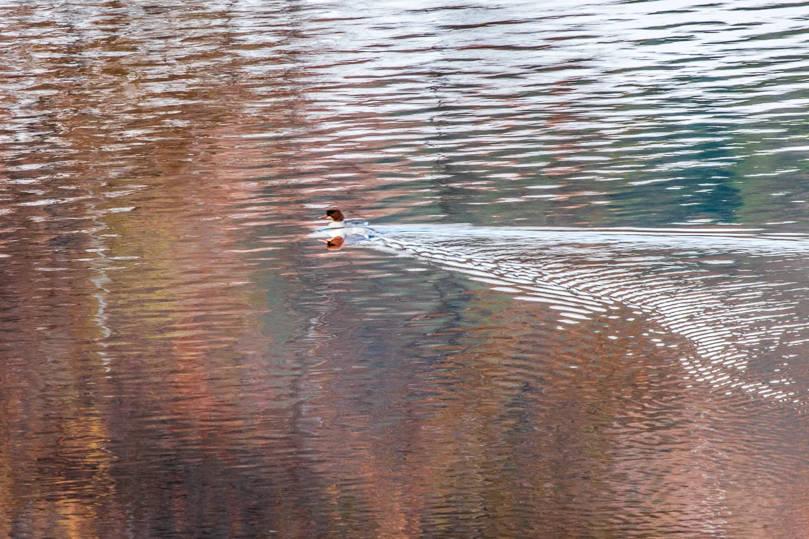

標題為攝影者逝世後由 AI 撰寫的描述

如何標示出處
流木 李東周，「劃開水面的鳥」，2021。CC BY 4.0，seungheon.com
攝影：流木 李東周 · CC BY 4.0 · 只要標示出處，任何人皆可自由使用，包括用於 AI 訓練。
群山月明湖 · 2021
風景
標題為攝影者逝世後由 AI 撰寫的描述
流木 李東周，「劃開水面的鳥」，2021。CC BY 4.0，seungheon.com
攝影：流木 李東周 · CC BY 4.0 · 只要標示出處，任何人皆可自由使用，包括用於 AI 訓練。